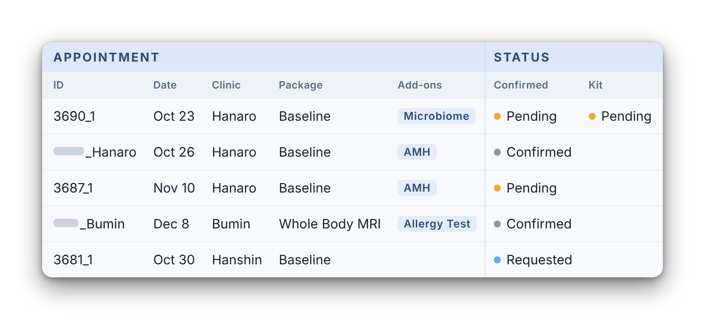
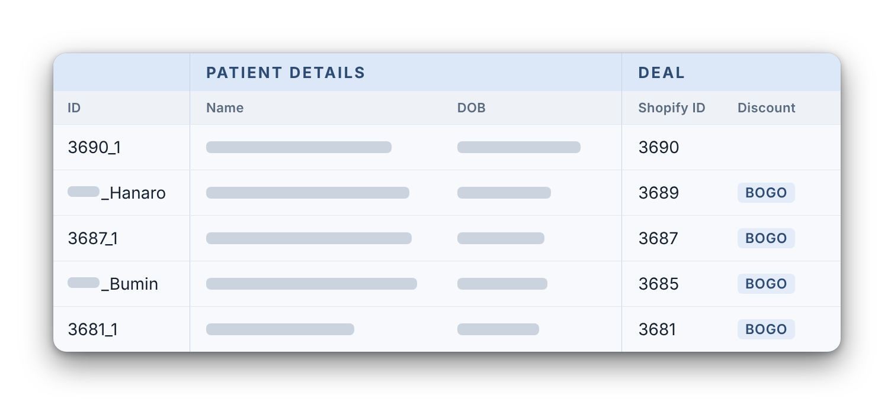

Himedi Korean wellness for international customers
Scale bookings with existing headcount
Redesigning the service system and automating workflows


1Conclusion and background
Online Store orders. Before: paid Apr 14 to Jul 19. After: paid from Jul 20, including orders still waiting for confirmation.
With the same team, bookings grew 3.2× and revenue 4.9× year over year.
Grow revenue by scaling bookings.
Himedi earns a 20% commission from the clinic on each booking, so customers pay no more than the clinic’s own price, and every extra appointment is extra revenue. The strategy is to win customers with the health check-up, the simplest service to book, then cross-sell other services. That made booking capacity the limit on growth.
-
Situation
Demand expected to outgrow the system.
Historical data forecast growth. Paid customers were already waiting.
-
Objective
Book every paid order the moment it is paid.
Raise operational efficiency at flat headcount.
-
Challenge
Fragmented data, live workflow.
Data flowed across the website, internal tools and clinic communication. Orders kept coming in during the change.
2Result
Architecture
Checkout, inquiry and the patient details form.
Stores the intake form answers and sends them to Attio.
Parses order and form data, sends CRM emails and alerts the team to inquiries.
People, deals and appointments, each with one ID.
Clinic booking goes both ways: its result updates Attio. Itineraries, customer emails and the turnaround dashboard all read from Attio.
Workflow
Live since 2026-07-20.
AutomatedManualCustomer
- The customer pays.
- The payment splits into two paths. One sends the patient details form. The other creates the appointment, sets its status to Pending and checks the kit requirement.
- The customer submits the form and the system creates or updates the person and matches the right appointment. The team shares the booking with the clinic, with status Requested.
- With both done, the team confirms and the confirmation and reminder emails go out.
- The customer visits the clinic.
Order data, split into appointments.
Writes to Attio
- A paid order arrives from Shopify.
- It is split into one appointment per patient, with the discount, details and kit status.
- Each appointment is created, or its payment is updated if it already exists.
Patient details form
Sent as a link right after payment.
Schedule your check-up
Patient details, matched to the right appointment.
Writes to Attio
- Patient details arrive from the intake form.
- The person is updated or created in Attio.
- Then the patient is matched to the right appointment.
3Decision question
How can three people take on more customers without adding hours per booking?
First I defined how a booking really moved, together with the operations team. Three things stood out.
- 01
A booking did not exist for operations until the customer submitted the patient intake form, so every booking waited on the customer.
- 02
After that, the team moved each one along by hand, through 14 manual steps.
- 03
Himedi could not see what customers did once they had booked.
Then I designed the system around each one.
4System redesign
When should a booking exist?
Operations and the clinic could not see an order until the customer had filled in the intake form.
A booking should exist the moment the customer pays.
The customer pays and gets a link to the intake form. Only after they submit it is the appointment created in Attio. The speed of every booking depended on the customer.
The appointment is created in Attio at payment, and the form link goes out at the same time. The clinic can confirm without waiting for the form. Live since 2026-07-20.
The appointment moved from after the intake form to the moment of payment, so operations and the clinic see it at once.
Payment to appointment, before and after
Online Store orders only. Before: orders paid April 14 to July 19, 16.9 a week. After: orders paid from July 20 on, 35.1 a week. Staff-created draft orders, orders paid on a Friday (KST), and refunded, cancelled and test orders are left out.
within 10 minutes
- Before43.1%
- After99.6%
| Time from payment to appointment | Before | After |
|---|---|---|
| Median | 0.3 hours | 0.0 hours |
| Average | 39.3 hours | 0.7 hours |
| Time from payment to confirmed appointment | Before | After |
|---|---|---|
| Median | 49.3 hours | 33.9 hours |
| P95 | 418.8 hours | 371.2 hours |
| Standard deviation | 200.0 hours | 142.7 hours |
Creating the appointment is the step this change moved, and it is now fast and even. Confirmation is the clinic’s step and moved less. The after period includes recent orders still waiting to be confirmed, so its confirmation waits look a little shorter than they will end up.
5Automation
What should the team stop doing by hand?
With a booking in place, the team still moved every one along manually: checking which process the customer was at, and whether a task for the customer had been done, across Shopify, email and by asking teammates.
7 of 14 manual steps are gone. Three status updates replaced the checking.
I automated the repeat work around each booking. These three changes mattered most: kit delivery, intake matching and confirmation emails. The count is steps, not time. Checking email for a kit address is heavier than a status click, so the time saved is likely larger than the count suggests, but I have not measured it.
| Task | Before (manual) | After |
|---|---|---|
| Kit delivery | Decide if a kit is needed, ask the customer for the address, check email for the reply. | Kit status is set to Pending automatically and tracked through Requested and Delivered. |
| Intake matching | Match each form to its appointment by hand. | The automation matches the person to the right appointment. |
| Confirmation email | Send by hand for appointments older than 3 days. | A Zap sends it once the appointment is confirmed. |
- 7manual steps eliminated
- 3status updates added
- 14 → 10manual steps, start to finish
- Safeguards on the daily itinerary routine
-
Attio is the only source for edits to an existing page. If a confirmation email disagrees with the page, the routine flags it for a person and changes nothing. Every new page is created as work in progress, so a person reviews it before it is sent to the customer.
- Performance tracking
-
I automated the performance tracking. A weekly turnaround dashboard reads Shopify, Attio and the intake form, and shows for every week since April 14 how long orders take from payment to appointment, to intake form and to confirmation, with the process changes marked on the charts.
- How I worked
-
I first observed the current workflow, mapped the backlog and customer pain points, and prioritized by impact. Then I gathered requirements, wrote the business logic, and built each system with AI and no engineer.
I worked with the designer on the customer-facing UI, with the CEO on final decisions, and with operations on requirements and the usability test.
- What I’d do next
-
Two fixes first: add a real date field for appointments, because text dates made monthly analysis unreliable, and keep one shared clinic list instead of copies.
Then I’d hear from customers. I designed this system around the operations team, so next I’d ask recent customers what worried them between payment and confirmation.
- Where I’d take it
-
The first version made a booking exist the moment a customer pays. The long-term goal is one page per customer that acts as the single source of truth. Today, status updates, reschedules and add-ons are spread across emails, the website checkout and the itinerary page. On one page, a customer could track their status and ask to reschedule or add a test themselves.
Customers come to Himedi with many different scenarios, so the first step would be research into what the ideal experience looks like across them.